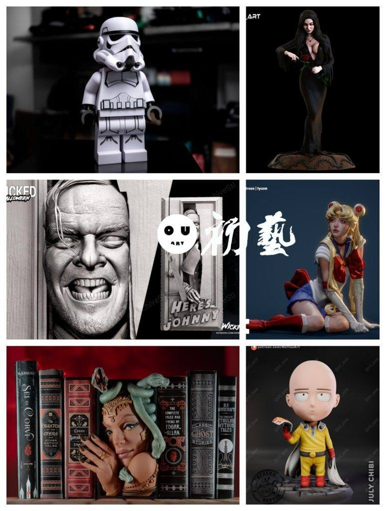
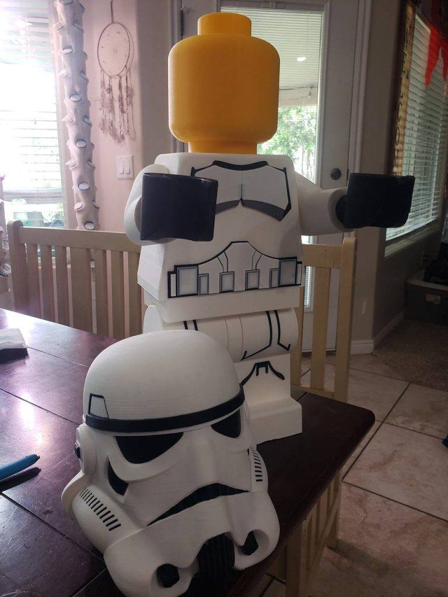
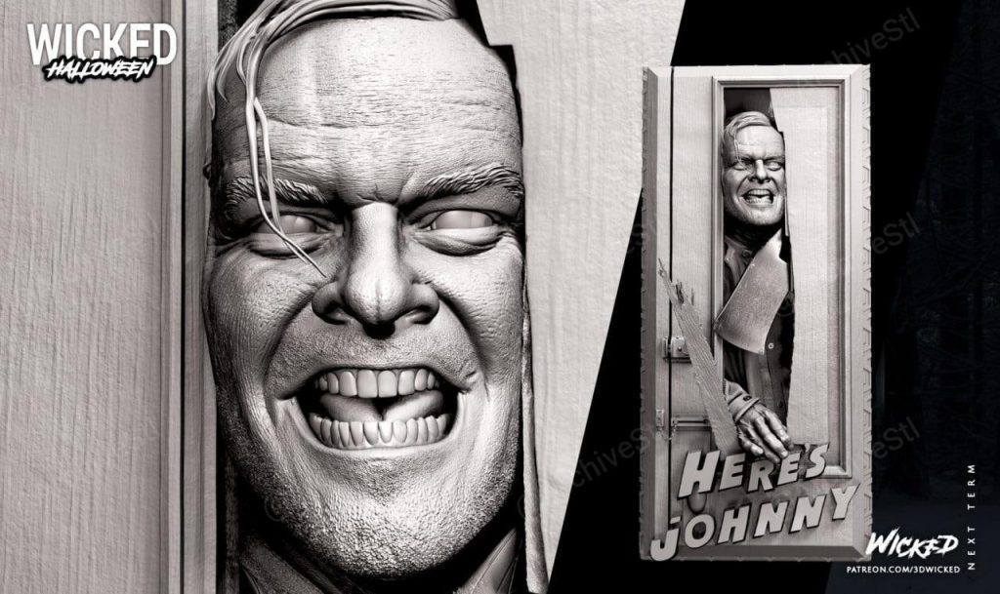
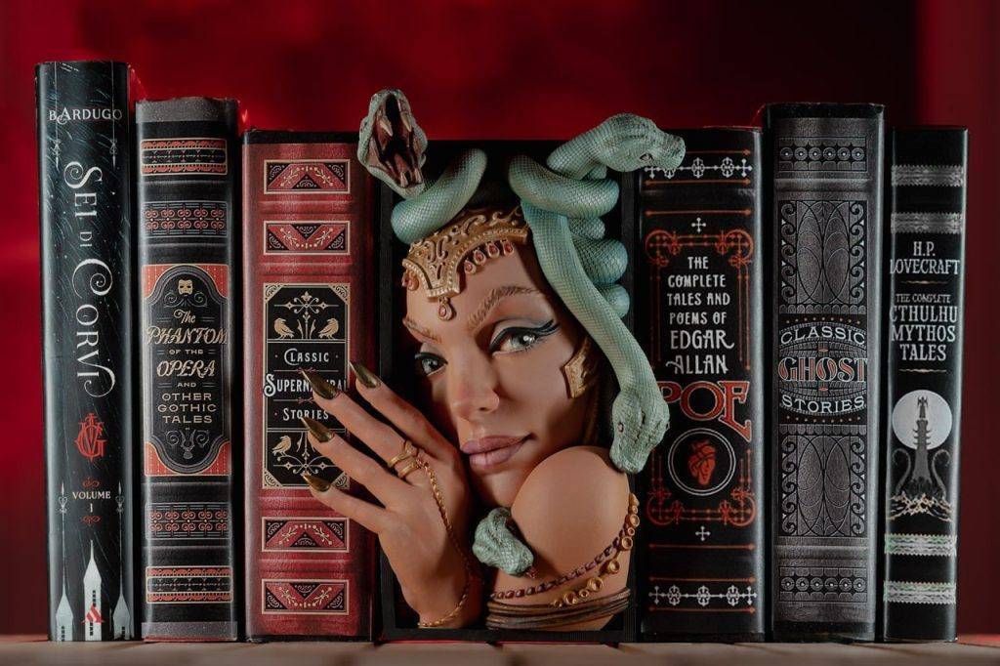
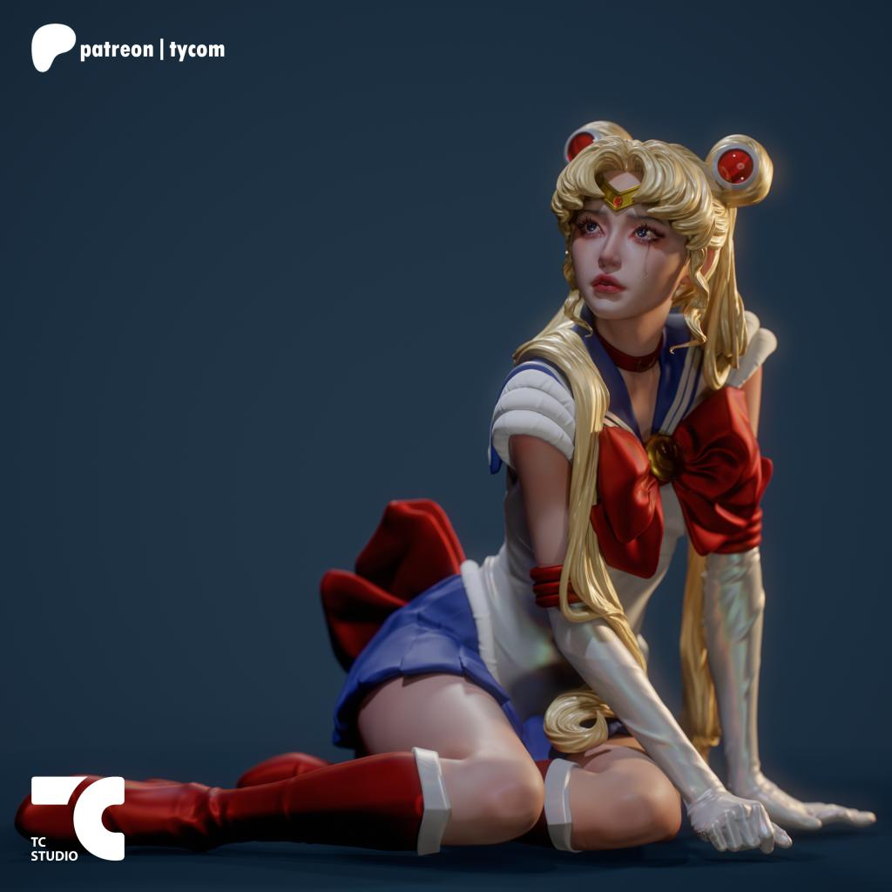
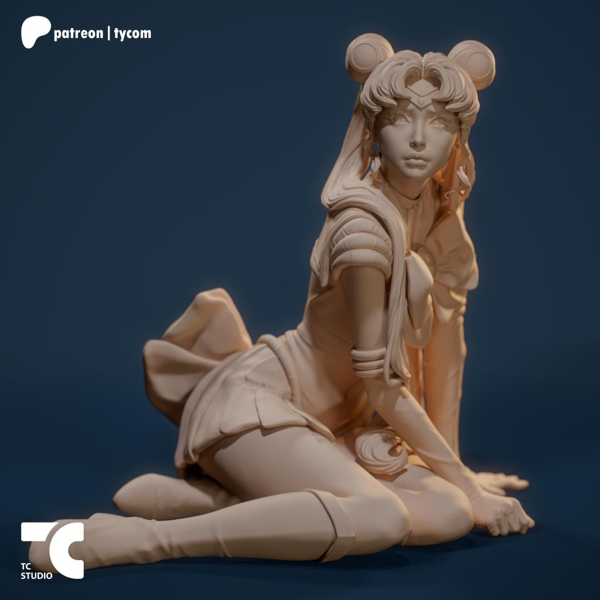
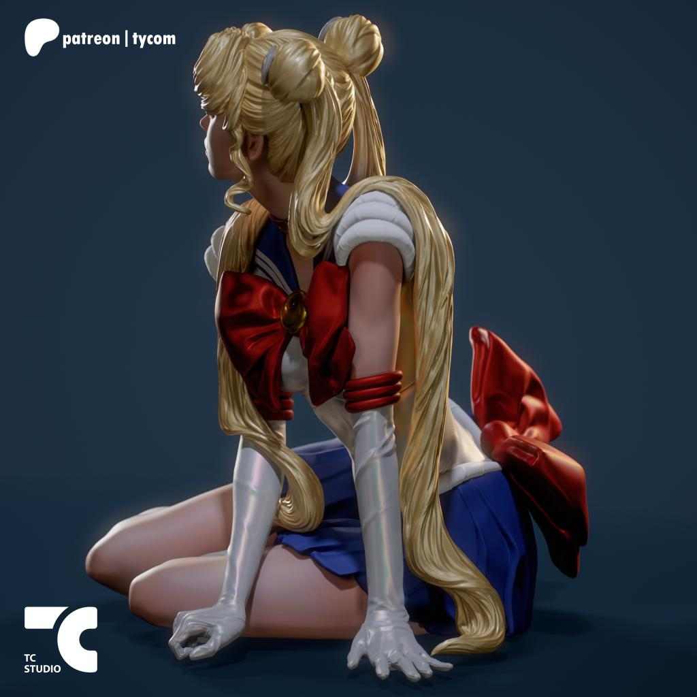
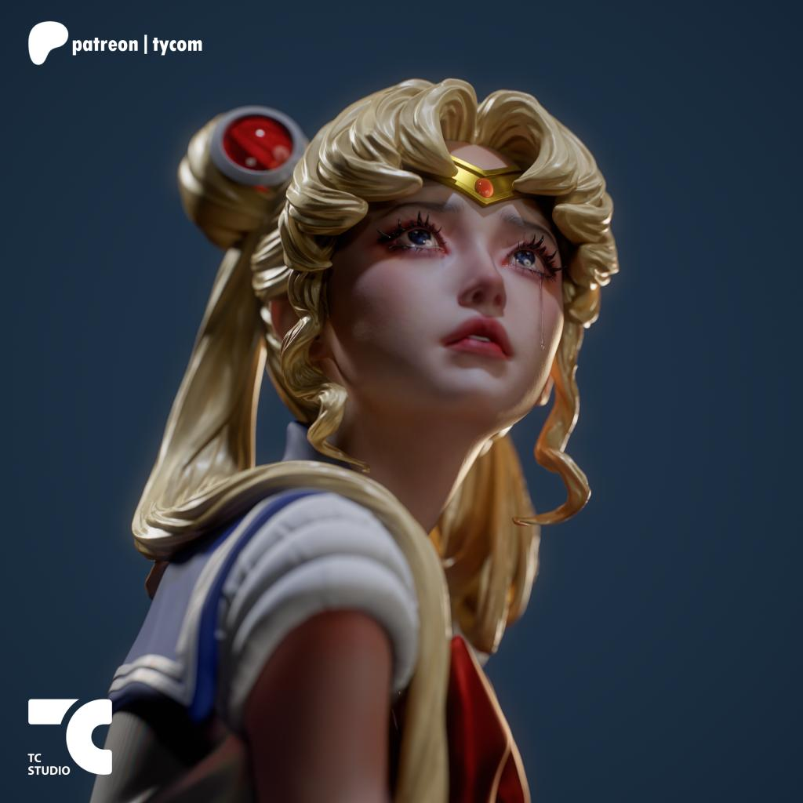

模型分享
11月11日STl图纸文件分享

1.乐高星战风暴兵，工作室场景用，改变比例后想象空间很大，可以用作各种场景。
链接：https://pan.baidu.com/s/1y82jWEuAOgWlAL34F7al9A
提取码：ovo4


2.闪灵，wicked出品，经典镜头，有分件。
链接：https://pan.baidu.com/s/1-p7-M99EeneyjEHOR-SAAA
提取码：qbst

3.书挡，精度还不错，白模和上色都不错。
链接：https://pan.baidu.com/s/1tgQzdmP1FFLOAy0nBbZZ2w
提取码：680h

4.女人和玫瑰，工作室练习素材模型，主要用于面具素材中的花和荆棘。
链接：https://pan.baidu.com/s/1tgQzdmP1FFLOAy0nBbZZ2w
提取码：680h

5.美少女战士真人版，模型素质不错，有可取素材。
链接：https://pan.baidu.com/s/1SNAG5xFtjoJo7NyU25-N5w
提取码：g1i9





6.埼玉老师Q版，人物可爱，适合打这玩儿做涂装练习。
链接：https://pan.baidu.com/s/1ckvtnSpmz2GerU9HmtdeUQ
提取码：ct70

以上内容仅供个人使用（非商用）
ONLY for PERSONAL (NON-COMMERCIAL) use.
加群获得更多免费模型！